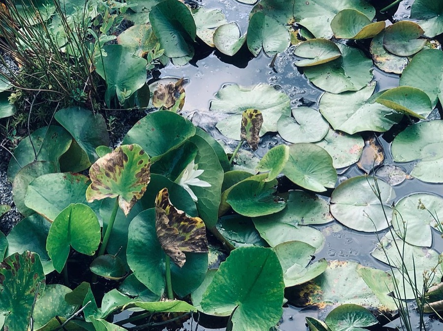

Интересные факты
- Часто вспоминаю мамины поговорки — они всегда почему-то подходят к случаю.
- Очень люблю бегать. Когда на душе тяжело или хорошо — просто бегу. Помогает лучше умных советов.
- Всё делаю до конца. Пообещал ловить креветок — ловлю. Начал бежать — бегу.
- Говорю что думаю, простыми словами. Некоторые смеются, а потом запоминают именно их.
- Не считаю себя умным, но со мной случилось больше удивительного, чем со многими профессорами.
- Мою компанию спас обычный шторм. Удача приходит к тому, кто оказался в море и не сдался.
- Случайно стал богатым из-за «фруктовой компании». Лейтенант Дэн доволен.
- Главное, что понял: доброта и упорство работают лучше хитрости. Это, кажется, и есть ум — по-моему.

Как со мной работать
Будьте честны, и я буду честен с вами. Я не понимаю интриг — зато я надёжный, добрый и никогда не брошу начатое. Дайте мне простое понятное дело и хорошего друга рядом — и я доведу всё до конца, даже если придётся бежать за этим через всю страну. И, пожалуйста, не обманывайте — это единственное, чего я по-настоящему не люблю.